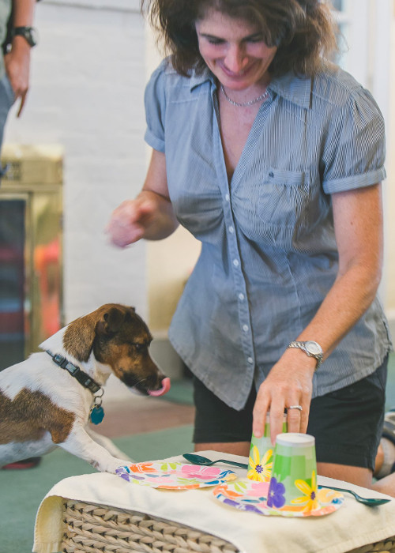
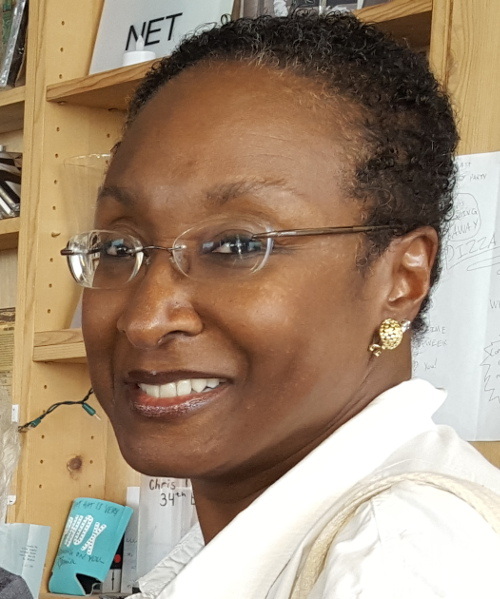
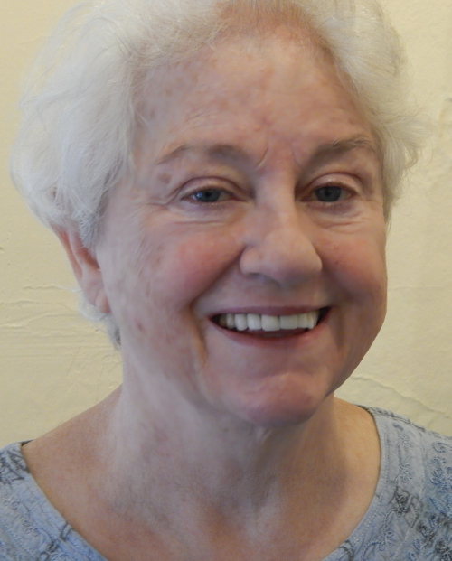
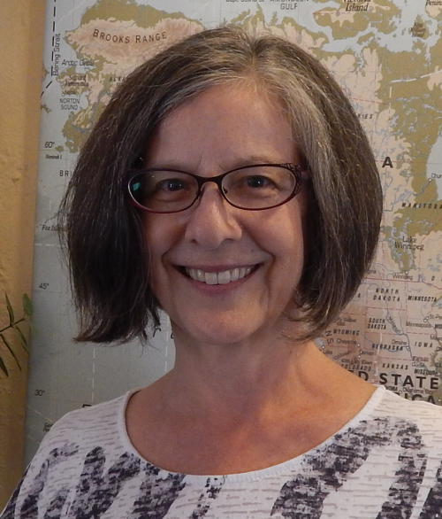
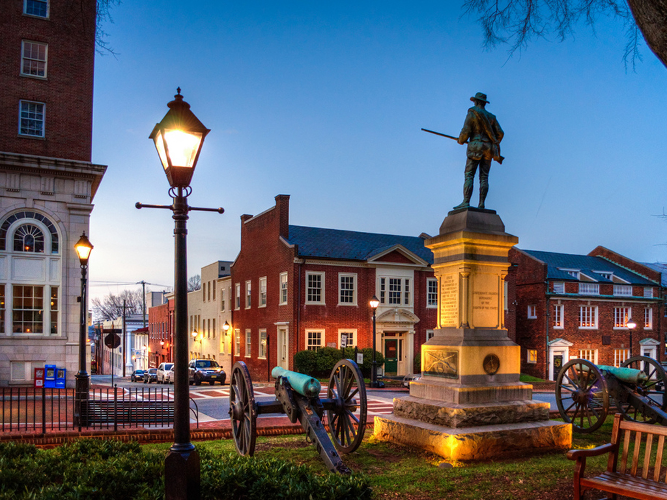
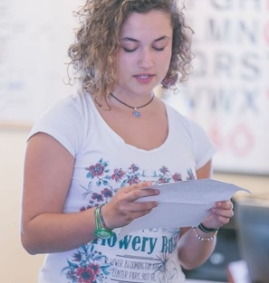
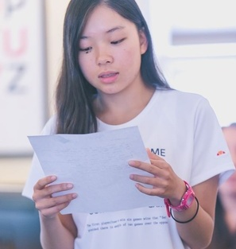
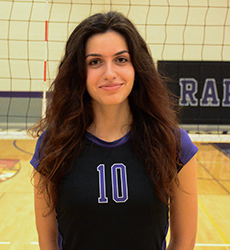

Spotlight on a Teacher: Marian DeAngelo

Interview with English Now! Teacher, Marian DeAngelo
You have been a dedicated teacher with English Now! for four years. What is your favorite part of being a teacher?
I enjoy having the opportunity to meet people from various parts of the word and learn about cultures and interact with them to find out how similar everyone really is in so many ways. Being a teacher here is unique. English Now! provides the opportunity to be creative and open sand small classes give you an intimate relationship with students. That’s way I love about being here. The students are here because they want to be here. It’s fun to work with enthusiastic and motivated students.
How did you decide that you wanted to be a teacher?
Some of my past summer jobs were at camps – teaching nature – I always a love for teaching. I got laid off from a corporate job. I started subbing. If I could handle being a substitute, then I knew I could do it. I survived the substitute world and when I moved to San Diego I went back to school for my teaching certificate. I taught fifth grade and I I had to plan my lessons so that my Spanish-speaking students could understand. Part of my training was teaching ESL and I had to learn how to reach students whose first language wasn’t English.
What was it like teaching in Germany?
In Germany I taught adults and I LOVED it. It was in a business setting and the students came to me because they wanted to learn English. Students were so personable and I became friends with many of them. As the years progressed, I also started teaching German kids in a neighborhood school who really wanted to improve their English. I had a great experience with those young students, some of whom have visited me in the U.S.. I would definitely go back to Germany again - I loved it so much.
You are an avid traveler. What is your favorite destination in the United States?
It’s hard to pinpoint because there are so many fantastic, beautiful places in the U.S. My favorite vacations have been to Alaska and to Bryce and Zion in Utah. My two favorites states are Oregon and Vermont.
In addition to teaching people, you also teach dogs! How did you get started in that work?
My interest in language relates to my work with my dogs – it’s all about making an association between a word and an action. For example, sometimes I use English and sometimes I use German, when I want them to do a backwards circle on the left, I use the German word for back, "hinter", and I want them to go on the right side I use English and say "backwards circle".
After getting our dogs, Mario and Bella, we thought – let’s really work with these dogs and train them to have good manners. So, I started focusing on obedience. Then I was working with a trainer who recognized that Mario and Bella had special abilities. She suggested that I work with another trainer who taught tricks. The trainer’s program was called Mutts Gone Nuts. From then on I was hooked. After a year of training with Mutts Gone Nuts, I was asked to join him for shows. After a year of that, I decided to start contacting senior centers to do shows for the elderly.
If you’re interested in seeing Mario and Bella perform, please ask at English Now! Their show is called Jacks and Jokers.
Spotlight on a Teacher: Jane Turner

What part of the United States are you from? What was it like growing up there?
I'm from what they call the midwest, even though Ohio is closer to the east. I was born and raised in Lima, Ohio on the western side of the state, very close to Indiana. I'm the oldest of three children. We had a happy, loving childhood growing up there in the 1950s. Our protected world was that of our African-American neighborhood block where we played "Wagon Train" from the old TV series, rode bikes, climbed trees, roller skated, jumped rope, caught lightning bugs played hide ‘n seek and played lots of baseball. My father was a self-taught gardener who had a big garden. Among the many fruit trees he planted was a wonderful apricot tree in the center of our back yard. Its abundant fragrant blossoms in the spring meant lots of sweet apricots for the picking in the summer…something that doesn’t seem to exist in today’s supermarkets! We didn't live that far from a dairy. We kids drank lots of whole milk. It was delivered in glass bottles to our doorstep by horse-drawn cart and we all loved to pet the horse. I always said it was the milk that helped me be the fastest runner on the block. Simultaneously, in spite of being called the "n" word in kindergarten for the first time ever, I enjoyed learning in school and welcomed the challenges of high achievement in that multi-racial environment. When I wasn’t outdoors, I loved reading, especially in my elementary years, and kept a list of more than one hundred books that I read in one summer.
Did you run competitively growing up?
I ran the 75 yard dash in junior high school. There was a girl that always used to outrun me by a head primarily because she was really tall. Both of our names were Jane. I finally did beat her once.in a regional AAU Jr. Olympics competition".
What else do you remember about that time?
My parents were diligent hard-working people who did their best to expose my brother, sister and me to the finer things of middle class life - from piano, horseback riding and skiing lessons, to annual family vacation travel around the country. Our family was equally active in the church and became aware of the Civil Rights movement that was expanding throughout the country in the 1950’s & 60’s. In the midst of trying to imitate the hugely popular singing groups of the Motown Sounds, I also remember picketing with our church group and some college students at a ku klux klan rally, complete with cross burning, not in the deep south, but in southern Ohio!
When my family moved to Shaker Heights, Ohio, a suburb of Cleveland, in the summer of 1968, our world and activism expanded accordingly. I became a little more politically engaged in such activities as "Young Folks for (Carl) Stokes" to help elect that city’s first African American mayor. I also joined a few student-led marches on our high school principal’s office to demand fair treatment for students of color, in one situation, and, in another, that girls be allowed to wear pants to school for the first time ever. (I never owned a pair of jeans until I went away to college.) My interest in journalism developed in the last semester of my senior year in high school, when I interned at the Cleveland Call & Post African American Newspaper. That led to a summer job before starting college.
Where did you go to college and what did you study there?
I only applied to three journalism schools at Boston University, New York University and Northwestern University in Chicago. I was accepted at all three, but went to NU where I got the biggest grant in its school of journalism. I did well my freshman year. Then I transferred to Howard University in Washington, DC where they had recently opened up the school of communications, led by the new dean, Tony Brown, who was also an admired director/host of Black Journal on PBS at that time. I made application that summer for expected enrollment the following January! I ended up being accepted for the September term! Luckily, Howard took all of my credits. At this time my career interest shifted from print journalism to broadcast journalism, specifically radio news. In fact, my radio instructor encouraged us to get our radio licenses so that we could operate our own control boards. I started at WASH Radio in the billing department back in the early 70's while still a student at Howard. When a news assistant position opened up, I got the job and began building my resume there and at WMAL Radio. I gained on-air experience as a vacation & weekend relief news anchor/reporter during the summers and holidays at the local soul music stations. I had to join the union while still in college back in the early 1970’s.
Can you tell us about your early career in broadcast journalism?
By the time I graduated Howard in 1975, I had a decent resume to go along with the degree, which enabled me to get my first full time radio news position at WHUR-FM Radio. I worked from 3pm till 11:30-pm, as the first female news anchor of their big news broadcast of the day, called "The Drum". About three months into the job there was a strike for better wages and working conditions. Broadcasters & technicians from other stations around the city supported us in this ultimately successful effort.
ABC Network bought the next station I worked for: WMAL AM &FM. There I developed my street reporting skills, working primarily general assignments and regional beats, as well as my news anchor skills. Sometimes our reports would be broadcast nationally such as for big demonstrations and breaking news events, including the return of the hostages from Iran at the beginning of the Reagan administration and the Air Florida airline crash at the 14th Street Bridge. Eventually I became news assignment manager for the news department, second only to the news director. I feel fortunate to have had my radio news broadcasting career right here in Washington DC.
In 1983, I got married to a widower with five young children. I let go my career to take up full time homemaking. My husband was with ABC on the tech side. He had previously taught TV production at Howard and I had at one time taken his class. I’d never dreamed that I was looking at my future husband.
How did you decide that you wanted to teach English?
Fast forward….I took off some 20 years to deal with my ready -made family while my husband worked the equivalent of two full time jobs. I reentered the workforce as a substitute religion teacher at the catholic school of the parish where my husband was assigned as a permanent deacon. After doing additional substitute work and working at a few more catholic schools that either closed or eliminated my religion position, I decided to change focus. My sister suggested that I look at teaching English. I looked online and came across the LADO International School. After some research, I enrolled in their semi-intensive program to become an English language teacher in the fall of 2010. It was a very rigorous curriculum, but the experience dispelled my fears that I was too old to get back into the workforce. I felt a renewed vigor, enthusiasm and excitement about where this would take me when I received my certificate in early 2011. The very day I was supposed to start as a volunteer at the Montgomery County Literacy Council, I was offered a teaching job at LADO in the Silver Spring branch. One day, about a year later, I got a tip to check out English Now! Am I ever glad I did!
What's your favorite part of being a teacher?
Being able to practice what some might call the ministry of presence, the being there for my students in whatever may be happening in their lives on any given day; and interactions with my students, because they teach me as much as I teach them. In fact, I feel like I get a bonus from them. While I haven't been able to travel worldwide as much as I would have liked, I get to do so, vicariously, now through the eyes and perspectives of my students.
How do you like to spend your time when you're not at English Now!?
I’m researching the family trees on both sides of my parents, aided by Ancestry.Com and trying to complete a quilt with dozens of fabric pieces that my grandmother started in the 1930’s during the Great Depression. (I’m almost finished!) Walking, fair-weather gardening, and flavorful, nutritious cooking are relaxing for me. My husband and I are very active in our parish church as well. We enjoy making the most of "stay-cations "and long weekends as well as taking in local/regional events & sightseeing whenever possible.
Do you have a favorite travel destination?
Going to Atlanta because my husband and I are the only ones in our family in the DC area. We can see a lot of family in one trip there; and of course, Cleveland, Ohio, continues to be home for me as long as my beloved parents are still there.
What else would you like your students to know about you?
I like to dance and take Zumba once a week. I’m especially fond of jazz and gospel music, but enjoy virtually all expressions of art.
Spotlight on a Teacher: Alison McCaul

How long have you taught at English Now?
I started in 2008 -- just around the time Paul Boesen bought the school.
What is your favorite part of teaching English?
The students, especially watching their relationships develop at English Now. When you bring these multiple cultures into a room together, there is this kind of awkward silence on the first day. And then as they come in each day, they get more and more familiar with each other and they are no longer just studying, but building relationships as well.
What did you do before you began teaching at English Now?
I was starting my family. I was living overseas for my husband’s job: first in Madagascar in 2001 and then we moved directly to India. My husband works for the World Bank as an agriculture economist.
Can you tell us a bit about your experiences with your family first in Madagascar and then in India?
Well, I had three babies back then [in Madagascar]. I went with a 4 month old baby, and then I had my twins while we were living there (they are just one year apart). We traveled a lot in Madagascar. I remember our last trip in Madagascar -- my kids were 3 and 4 years old -- and it was raining and they had on their little rain jackets -- and we walked into this forest with a guide and we could see these huge lemurs just jumping from the trees. It was fantastic! Madagascar was a very special place.
And then we were in Delhi. We went from a country of 16 million to a city of 16 million. And that’s when I started teaching. My kids went to the American embassy school and I started doing substitute teaching there, some ESL but mostly classroom teaching. And we took loads of trips all over India -- by trains, planes, and automobiles. One of our favorite places was Gujarat. We went to a lion park there, where we saw baby lion cubs being born and my daughter was the first one to see them and she was in the newspaper. The national parks were fabulous.
So how did you first get into teaching English?
After graduating college, I worked for the IMF [International Monetary Fund] as a research analyst in Washington DC. After 8 years, I decided I wanted to experience life outside an office. So I started doing volunteer work as a Montgomery County literacy volunteer and I taught a Chinese lady once a week. And then later I found out about the JET (Japanese English Exchange) Program through the Japanese Ministry of Education.
I applied and was accepted. I lived 2 years in a village in Emukae, Nagasaki prefecture. My apartment was surrounded by rice paddies. The third year on JET I lived in Nagasaki city. My apartment was on top of the mountain with a fabulous view of the harbor. I have very fond memories of Japan.
Where did you grow up?
I grew up here: McLean, Virginia; and DC. I’ve always been involved in international work, so DC was a logical place to be based after college.
What other countries have you lived in?
In addition to living in Japan, Madagascar and India, as a child I lived in Taiwan.
What countries would you like to go to where you haven’t been?
I would like to go visit places in South America. I’ve been to Colombia, but I haven’t been elsewhere in South America. I particularly want to visit my friend in Argentina. What do you like to do in your free time?
I like to do yoga, swim, bike, and take long walks my dog. I like traveling with my husband and three teenage kids. We love maps and my kids like to mark all the places they’ve visited.
Spotlight on a Teacher: Barbara Lewis

Barbara Lewis has been a wonderful member of the English Now! family for more than 10 years. Recently she was interviewed by English Now! instructor, Peggy Blair, about her long and exciting career. Barbara's teaching started in a very different context, as a Peace Corps volunteer in an African village in the 1960s: "It was really hard for me. I was living in a small teachers' house in a small village teaching English to 44 students in one classroom with only a little blackboard." Learn more about Barbara below!
INTERVIEW WITH BARBARA LEWIS CONDUCTED BY PEGGY BLAIR
Where did you grow up, Barbara?
I spent age six to sixteen in the Persian Gulf on Bahrain Island where my father was a doctor for an oil company. There was a community of foreigners living there, predominantly British, Australian, Canadian, and a few Americans. The school I attended till the age of 13 was a British day school.
What was your family like?
I had an older sister and a younger brother -- I still do. We were very close because we were on our own living together in a foreign country. My father spent a lot of time with his children teaching us how to play baseball and chess and that kind of thing. He would come home in the evenings and we would have family activities together -- and that was not usual during that era. It’s not so unusual now, but it was back then.
Where did you go to college and what did you study?
I started out at Pomona College in southern California. While I was there, there was an exchange program with Fisk University [a traditionally black college] in Nashville, Tennessee. I was one of only three whites studying there at the time of the civil rights protests. I participated in one of the lunch counter sit-ins at Walgreen’s [trying to get them to serve black people as well as white people] and I was arrested [she spent 48 hours in jail!].
My mother was upset about all the publicity and the hate mail she received, so she forced me to come home (my father had died two years earlier when I was 16). Then I went to France to be an "au pair," but soon realized that I had to finish college. So I went to University of Michigan at Ann Arbor (same school as Paul Boesen went to) where I majored in English because I loved reading so much.
Why and when did you join the Peace Corps [a U.S. program started by President John Kennedy that sent volunteers to work for two years in developing countries]?
The Peace Corps was a natural for me. Don’t forget that President Kennedy gave his famous speech announcing the Peace Corps at the University of Michigan. A lot of the college students enrolled right then and there. I had been admitted to the State Department but it took so long for them that in the meantime I joined the Peace Corps and went to Guinea in Africa (1963-1965).
Did the Peace Corps experience change you in any way?
Well, you start out so idealistically and think you’re going to make a real difference, but it’s you who changes, not the country. It was really hard for me. I was living in a small teachers’ house in a small village teaching English to 44 students in one classroom with only a little blackboard. I was very isolated. We were among the first Americans to go over there after independence. The man who worked in the post office hated Americans and burned all our mail, so we never even got letters from home. And of course there were no telephones or Internet!
Any other jobs you had that were interesting?
I taught English in Bangladesh, Egypt, Romania, Zambia; and in Amman, Jordon (where I taught fourth grade at an international school). I also taught special education [children with disabilities] in the U.S. for many years.
Your family?
I have a son who works in human resources at the Marriott in Pittsburg, Pennsylvania, and I have a daughter who works as a diplomat in China. I have three grandchildren.
You’ve traveled so much. What country did you find most interesting?
Impossible to say! Every country has its charms. Romania was fascinating when I was there. It was just coming out from under Communist control. And in the countryside, it was like being back in the Middle Ages -- you’d see people with plows, no electricity, and beautiful old churches. But I also loved Africa -- all the animals and safaris and parks, and climbing Mount Kilimanjaro, and snorkeling and deep sea diving and all those outdoor activities. Zambia was filled with music -- everybody seemed to be singing all the time there. And I loved tracking the places in the Bible in Jordan. I also loved teaching the Palestinian children, so eager to learn, more eager than in any other place.
Any future travel plans?
Well, I just got back from Indonesia where I had a wonderful trip. I think the next trip will be to Germany. My nephew works for the United Nations in Bonn, and my sister and I want to visit him.
Thank you, Barbara, for your years of service to so many students at English Now!
Spotlight on a Teacher: Peggy Blair

Margaret Whitman Blair ("Peggy") is a fantastic instructor, with a special love of teaching writing. She's even a published author! Meet Peggy below!
How did you decide that you wanted to be a teacher?
I guess it all started with my own teachers when I was young, several of who insisted that I should be a teacher. One was so sure of this that she invited me to teach The Great Gatsby to our class! I did enjoy that, but still, I wasn’t so sure. In my young mind, being a teacher sounded a bit boring, actually. Well, I think I can now admit that those teachers were right---I enjoy teaching so much!
My first real teaching position was in Osaka, Japan. I had studied Japanese (and French) at university, and had been an exchange student in Japan, so I was very happy to find a way to return there after I graduated. It was a wonderful experience, although this was in 1973-74, the time of the energy crisis, so I do remember that the winter was extremely cold!
I taught in DC for a while after that, but my next big teaching job was with the Peace Corps. I lived and taught in a teacher’s training college, a few hours from Bangkok, Thailand for a little over two years. I also met my husband there!
During the Peace Corps, I did a lot of traveling in Southeast Asia and after that I worked on a kibbutz in Israel sorting apples, and backpacked around the Greek Islands and traveled through Europe. I then went back to school to earn a Master’s degree in International Relations, and spent many years as a journalist covering international trade issues. I loved that—the writing, the press conferences, the deadlines, and the whole field. I needed to scale back on that work when I had my first child (Matt, now 29), and left it entirely some time after our second (David, now 26) arrived. That’s when I turned to fiction writing.
How exactly did you become a writer?
I started writing screenplays with a partner, when I had young children, which was fun, but never really took off. My first book idea actually came from my eldest son, Matthew. He was 8 or 9 at the time, and was very interested in the Civil War. So we read book after book, watched movies, and went to Civil War "re-enactments." Because my two boys used to fight quite a bit, I was inspired to write about two present day brothers who argued a lot and while in a Civil War re-enactment, went back in time, finding themselves on opposite sides in the Civil War. My son Matt was my first reader and editor!
How did you get the ideas for your other five books?
After the first historical fiction novel, they followed fairly naturally. It helped that I was an interviewer on a cable TV show at that time, called "Out of the Past," which allowed me to talk with historians and others knowledgeable about different eras and events in history. So I got new ideas that way, and was also able to do a lot of my research through the show once I had the idea, too. For example, I interviewed a woman who was one of the early female pilots around the time of the 1929 "Powder Puff Derby," which later became fodder for my book called The Roaring Twenty: The First Cross-Country Air Race for Women.
How did you come to teach at English Now!?
After my boys grew up, I felt a little isolated, though I was a member of many writers’ groups, and I taught at the Writer’s Center in Bethesda (courses on writing historical novels). I heard about English Now! in 2008 and I knew that I wanted to go back to my first love, teaching, and I have been happily teaching here ever since.
What is your favorite part of being a teacher?
It’s hard to pick one favorite, as there are so many nice moments, but if I had to choose, I would say that my favorite experience is when a student is able to communicate at a deeper level, and share his or her feelings, or an experience with me. When a student explains or describes something in a way that I can immediately understand, in a way that communicates their personality, especially when previously they couldn’t really express themselves well---I am thrilled! And I do love to share a good laugh with a student. That makes my day!
What is different about English Now! compared to other places that you have taught?
There is a wonderful energy at English Now!, I find. Also, the teachers here are given the opportunity to be themselves. We are given the freedom to teach in the way that we think is best, to really look at each student, and tailor-make a program for that individual student’s needs. I have taught at places like Berlitz, and it is not such a fun experience, because you have to use only the Berlitz method, and only the Berlitz books. That can be very stifling. I think the English Now! way is much more effective for our students, as is the smaller class size at English Now!.
What are your hobbies, besides writing?
Well, I can really sympathize with my students at English Now! because I am currently studying Spanish, and it sure isn’t easy! But I do enjoy learning new languages, and I also enjoy bicycling and doing crossword puzzles.
What book are you working on now?
I am working on a mystery novel set in 1882 Siam (Thailand). It does require a lot of research, though, and the plot is complicated, so it is going very slowly. Plus, I just had my hip replaced, which has also slowed me down a bit!
What is your favorite place to visit in the United States?
Oh, it is so hard to choose! There are many: I love the Southwest, southeastern Utah, Santa Fe, and also the Pacific Northwest. Here on the East Coast, I like Block Island (RI) and the Florida Keys.
What else would you want your students to know about you?
That I love my sons, and I miss them very much! Matthew is in Providence RI, working as a lawyer for people with disabilities. And David is involved in the opening of a high-end "small plate"/tapas restaurant in Madison, WI. I do have 2 cats, whom I also love, but they can’t fill the boys’ shoes!
My husband Bob is an economist, working on antitrust issues with the Federal Maritime Commission. He also teaches poetry writing on Wednesday mornings, at Miriam’s Kitchen (which serves homeless people). He has even had a poem published, in fact, so there are now two writers in the family! We have been happily married for 37 years.
I think that’s all I’d like to add!
Three Great Things that I Experienced While Hiking and Camping
Emiko Araki

In August, 2015, Paul, other students and their families, and I went hiking and camping in Virginia, and this became one of the unforgettable events in my life. I will describe three great things that I experienced in the hiking and camping.
1. Teamwork
The mountain where we went hiking was rocky and we had to climb up on the rocks many times that were taller than our height. When I could not climb up by myself, Paul or other strong friends always pulled up my arms. When I was very tired and could not go forward, a friend of mine asked me, "May I bring your backpack?". When some children were tired and did not want to walk, other children and teens encouraged them. Thanks to this wonderful teamwork, we all could reach the top of the mountain. I could not enjoy this feeling of accomplishment without my great teammates. The sandwiches that I ate at the top of the mountain were the most delicious I have ever eaten.
2. Warmth of fire
At night, we enjoyed a campfire. Sitting around it, we enjoyed drinking wine, eating s'mores, and talking. There were no electric lights, so the only thing I could see was the fire. When I was watching it and talking with others, I could really relax after the hard day of hiking. Until this time, I did not know that the fire was so warm and made me stay relaxed.

3. Nature
I was surprised by Paul and his daughter walking around with their bare feet in the campground. It seemed to feel great, so I should have walked without shoes too. On the night of camping, I saw some fireflies flying. The next morning, we went to a stream in the campground and walked in it. The cold stream cooled my tired foot muscles down, and I felt great! All of these were amazing for me since I cannot have these experiences in my hometown, Tokyo.
I met some people who I went with the hiking and camping for the first time on the day of hiking. However, after hiking and camping, I felt that I have known them for a long time. I would like to express my deepest gratitude to Paul and others for giving me these wonderful, exciting experiences.
Emiko Araki has been a student at English Now! since November, 2014. In Japan, she was a patent engineer in chemistry and molecular biology fields at Shiga International Patent Office, and instructor at Tokyo College of Biotechnology. Currently, Emiko studies molecular biology at the National Institutes of Health (NIH). In her spare time, Emiko enjoys running and spending time with her husband and cat, Mi.
Places We Recommend for a Day or a Weekend…Charlottesville, Virginia

Students often ask us about things to do outside of Washington, D.C. We are very happy to share a description of one of our favorite nearby destinations! Please also ask at our reception desk for more information about Charlottesville and Monticello next time you are at the school.
Charlottesville is a small city located approximately two hours from Bethesda. It is best known for its historic sites, such as Thomas Jefferson's home at Monticello, as well as the university he created, the beautiful University of Virginia. Take a walk among the classically Virginian architecture of the university and see a great example of an American "college town." Nearby, you can also a walking tour of downtown Charlottesville and visit other early-American historic sites.
Monticello is a great place to learn about early American history, the culture of colonial Virginia and the early republic, and one of America’s most famous Presidents. This is also a great place to learn about the American South, including the tragic story of slavery that eventually led to our Civil War. Jefferson’s home has been beautifully preserved, and guided tours are convenient and accessible. Note: you must purchase tickets to tour Monticello. For more information on Monticello or Jefferson, or to purchase tickets, visit the Monticello website.
Yet there is more than just history to enjoy here. Charlottesville has developed a rich arts and entertainment scene, especially when it comes to live music. You can hear music in clubs, theaters, and on the street. In addition, many good restaurants line the quaint streets downtown. The Charlottesville Historic Downtown Mall is the place to go. A short walk from the University of Virginia’s campus, the Mall offers many arts, entertainment, and restaurant options. You can even go ice skating at an indoor city ice rink on the Mall, in the winter!
Beyond the city of Charlottesville, miles and miles of undeveloped rural forest and fields are dotted with quaint pockets of rural life. So take a drive along the scenic and gentle roads that wind over hills and low mountains, opening suddenly on to beautiful views. You may even want to drive part. If you like to get moving outdoors, you can kayak the James or Rivanna Rivers, hike wilderness trails, or bike long trails and quiet country roads where farmers are harvesting crops in fields that have been worked by their families for generations.
There are also many orchards along those roads, in the summer you can pick strawberries, cherries, and peaches. In the autumn, there are shiny and juicy apples waiting to be picked. Finally, speaking of fruit, enjoy tours and tastings at more than 20 vineyards along the Monticello Wine Trail, and the area's award-winning small-batch beer breweries that make up the Brew Ridge Trail.
Please let us know if you are traveling to Charlottesville. We'd love to hear how your trip goes, and if you have recommendations for other students and their families!
Fun Things To Do in the Winter in the D.C. Area

It has been warm so far this winter, but as cold weather arrives we encourage you to get outside and try one of Washington's outdoor ice skating rinks.
WASHINGTON HARBOUR ICE RINK
3000 K Street NW, Washington, DC 20007
This is the newest and largest ice skating rink in Washington, DC--even bigger than New York City’s Rockefeller Center rink! Washington Harbour (in Georgetown) spends most of the year centered on a beautiful fountain surrounded by half a dozen restaurants. But in the winter, the fountain magically transforms into an ice skating rink. It’s best after dark when dozens of twinkling white snowflakes light up and the rink is bathed in glorious light. Since it’s only open from November thru March (weather permitting), this ice rink is always busy - including on Christmas Day!
- See more at: http://www.thewashingtonharbour.com/ice-skating.
TYSONS CORNER CENTER ICE RINK
Tysons Corner Center, McLean, VA
Also new in the DC area is the outdoor ice rink at Tysons Corner Center mall. Combine Christmas shopping with a bit of fun! The Tysons Corner Center Ice Rink is located on the plaza between Lord & Taylor and Hyatt Regency. The Skate Shop (for skate rentals) is located inside, 2nd floor next to Lord & Taylor. Open every day and all holidays, November through early March (weather permitting). There are extended hours during the holidays, too. See website below for exact schedule. Note: lessons are also available!
- See more at: http://www.tysonscornericerink.com/
NATIONAL GALLERY OF ART SCULPTURE GARDEN ICE RINK
9th St. and Constitution Ave. NW, Washington, DC 20001
This is our top choice for ice skating, on Washington's famous National Mall. The National Gallery of Art Sculpture Garden ice rink is a favorite, memorable destination for outdoor ice skating. Located in the center of the gallery’s outdoor Sculpture Garden, on the National Mall, this ice skating rink is perfect as with just a friend, or with the whole family during the holidays. Since it can get very busy during this season, tickets are sold in two-hour sessions beginning on the hour. So, if you can, buy your ticket first and, if you have time, visit the works of art in the surrounding Sculpture Garden or grab a hot chocolate in the Pavilion Café until it is your ticket time. The rink opens Nov. 14 and is available for practicing your axel jumps until March 15 (weather permitting).
- See more at: http://www.nga.gov/content/ngaweb/visit/ice-rink.html
Spotlight on Creative Writing
Creative Writing as an afternoon workshop for advanced students in the Intensive English Program at English Now! We were so excited to read the work completed over the summer by some visiting students, and we would like to share it with you:
Outside, near the trees and green, I feel relaxing and quiet. The sounds of the wind move sweetly the trees, which make a soft sound. All the birds probably are inside comfortable and little houses in the wood and trees. So they feel protected and they don’t sing, especially today that is a cloudy and gray day. All around me is especially green and some water cover some part of the ground because the day before the rain fell like pouring rain. The houses near the trees are empty and no people are talking or shouting, just silence and a natural sounds covers this area. You can hear the far noises of the cars on the street and also the works on the road probably men are building something new. However, they aren’t so close, and it is easy and simple to be interested in natural elements and focused on the quiet movement of the trees and of the wind.

By: Elisabetta from Italy
When the winds come leaves are waving.
In the air is the smell of rain.
Will it rain soon?
Between the fallen leaves tiny bug is walking slowly.
Hurry up to your house.

By: Mariko from Japan
I hear
I smell
I see
I feel
But I don’t taste
I hear the wind
I smell the wet wood
I see the trees
I feel the cold
But I don’t taste
I hear the machine working
I smell the fresh air
I see a man
I feel the wind in my hair
But I don’t taste
I hear the keys that touch each other
I smell the perfume
I see the bird fly
I feel tires
But I don’t taste
By: Maria from Colombia
The Top Hat Found
There was a horrible animal that could live on the water but also on the land. All humans were terrified by it, because it was really angry. He preferred to live in the water in particular in a lake near a small city called Macera. The habitants of this city never went to the lake, but one day one wayfarer arrived. The other people said to him that a terrible creature lived in the waters of the lake. The only problem was that the man was very interested to see this strange animal, so he decided to go to the lake.
When he arrived there at the start he didn’t see anything in the water. That was because the creature was behind him. So the man was coming home when something bit his leg and he saw the horrible animal. After that day nobody found this man but only his top hat.
By: Benedetta from Italy
Here’s what their teacher, Liz Paul, says about her approach to Creative Writing:
We are always writing something new in the Creative Writing class. The focus of the class is generating rather than perfecting writing. At English Now! we know the importance of things like grammar, punctuation, and word choice, but in the Creative Writing class, I try to create a space where we don’t worry about these things. I want students in the class to write freely and bravely about things that matter to them. For most of us in our daily lives, writing is something we do to communicate with a particular audience to achieve a particular goal. In Creative Writing, we write for ourselves, for the pleasure and adventure of it. My favorite part of the class is when the writers share their work with each other—it’s such a gift! It also helps us learn more about each other and our cultures. So I try to create a space where writers feel free to share, knowing that everyone is listening to appreciate—not judge—each other’s writing. In addition to writing and sharing our own work, we also read poems, stories, and essays by published writers. These examples help us think about the artistic and expressive qualities of English and usually give us new vocabulary too. I hope students in my class have fun, gain confidence as writers, and learn more about what language and literature mean to them.
Spotlight on a Student: Yuriy Pylypchak

Where did you grow up?
I grew up in Ukraine in Tornopil. Until age 23 I lived there. After high school, I finished seven years of seminary in Ukraine. After that I was sent to Italy for continuing my studies. I was there for five years. I got married in Ukraine last September. We decided to take the opportunity to move to the US in January 2015.
How long have you been studying English?
I’ve been studying English since high school but I didn’t take good classes in Ukraine. I had many different teachers. I wasn’t thinking about moving to another country so I didn’t learn English very well. Only in Italy I started to learn more English because I had to read and go to conferences in English. I learned Italian and English at the same time. I learned Italian because all my studies in Italy were in Italian. I am working toward my doctorate in in Italian now. My English vocabulary was poor and I couldn’t speak well. But when I came here I started to improve my English at a higher level.
Why did you decide to come to the U.S. to study English?
We thought about U.K. or the U.S. because my wife speaks English very well and we decided to move here. I wanted to study here and I thought it would be helpful for my dissertation because I am writing about palliative care and in America you have a lot of good schools and experience about palliative care. I am taking classes about palliative care and chaplaincy.
How is learning English here different from your experience in the Ukraine?
So different. Here I have English-speaking teachers and I learn only in English. In Ukraine, our teachers usually were Ukrainian and English was their second language. They didn’t have very good pronunciation in English. Here I have time and opportunity to speak in English and live in an English speaking area.
You have also been working as a lifeguard during your time in the D.C. area. How were you able to get that work? What was your most interesting day on the job?
I knew one Ukrainian person who told me about this opportunity. I spoke with the supervisor who is also from Ukraine. He told me how to take courses to get a certificate. I like to swim and I like this job. For this moment it’s helpful for me, I am able to earn something while I take courses. This job gives me this opportunity.
My most interesting day was when there was a whole soccer team in the pool. It was fun but dangerous because like all kids they wanted to run and play and jump. It was fun but also hard because I felt responsibility to them.
Can you describe something about American culture that was surprising to you when you first came to the U.S.?
Celebrating Thanksgiving was surprising because we don’t have this holiday in Ukraine and I didn’t see it in Italy. It was interesting because of the culture and tradition. It was new and interesting.
Can you remember anything that was difficult when you first arrived, but not so difficult now?
Language. I couldn’t explain myself and I couldn’t speak with other people, It was very difficult, Now I can do it and I am happy I can do it. I like to have conversation with other people. In that moment I can learn more about their culture and mentality.
Can you describe your interest in Pastoral Counseling? What is the next step in your career?
It began in my schools in Ukraine and Italy. I was interested in helping sick people. I was feeling like I can do it and I like to do it. I had had some experience in Italy as a volunteer. I was a member of the palliative team in Rome. I like it very much. I had this idea to take classes here. I was accepted to the Association of Clinical Pastoral Counseling in Rockville and will begin courses in January. I am doing this while I continue working toward my doctorate in Italy. I will need to return to defend my dissertation. My topic is psychological and spiritual aspect in the development of palliative care in Ukraine.
Do you have any advice for other people who come to the Washington D.C. area to study English?
These English classes are amazing for me. They are very helpful for anybody who would like to improve their English. The atmosphere is very friendly with all the classes. I learned a lot about American culture. I had English classes before at the library and other places, but here I think it’s a wonderful place.
Spotlight on a Student: My First Year in the United States, by Ioanna Galani

Note: we were fortunate to meet and have the chance to work with a wonderful student from Greece named Ioanna Galani when she arrived in the U.S. late last year. These words are entirely her own. We share them as wonderful testimony to the experiences that so many of our students have in the U.S.
My story starts in the beginning of October 2014 when I first came in the United States from Greece. It was an unexpected chance, but I took it without a second thought. I am nineteen years old and as you understand that encouraged me to come to the land of opportunity. I did not know what I will do here or how is life in the United States, so I had so many questions going through my mind about if I am going to make it or not.
Usually when you go to a new country the first months are like a honeymoon because you fall in love with everything, such as culture, sights and food. The first months that I was here it was a cultural shock. So, I said to myself that I am big girl and I should think about what I need to do with my future. First of all, I felt the need for communication, which was impeded due to the lack of fluency in the English language. I have studied English back in Greece, but when you actually live in the United States you realize that you are not fluent enough to communicate effectively. As a result, I found English Now!, which was a school not only to improve your English, but also to meet new people from all over the world and learn things about the country that you live in. This period I felt really blessed that I was there. My verbal communication improved a lot, I met professors eager to learn about me and I also socialized.
After several months l left from English Now! and I decided to go to the Montgomery College. It was a very stressful period in my life because I was trying to figure out for what classes I need to register for and how the college works. The Spring Semester began in January and I was ready to see how college in the United States was. In the beginning, I was worried, but after some weeks I felt comfortable with everything. I found some people to hang out with in the college and at the same time I was thinking what my major will be and to what university I want to transfer. Furthermore, in Greece I was an athlete and I decided to play for the college women's volleyball team and hopefully for the university women's volleyball team that I would like to transfer.
Moreover, I was searching about a volunteer job because I thought that it would be beneficial for my resume for the university. One day in the college there was a volunteer fair and I heard about a volunteer job that was very interesting. It was a program, which was called ''Girls on the run'' and very soon I contacted them to go and coach those girls. This program offered me the chance to view another aspect of myself. It wasn't about only running, it was about who you are, what habits, values and beliefs you should establish and to know to appreciate yourself and the others. As a coach of those girls I didn’t have the responsibility only to teach how to run but also I had to successfully convey to them those important values. It wasn’t easy…Girls in this age have a lot of questions. Although the questions seemed simple, surprisingly I had to find out a multidimensional answer.
The Spring Semester finished up, I got excellent grades, the girls ran and did their best and it was time to start taking the courses that were related to my major. My major was Kinesiology and during the first summer session I took Math and Biology. I had a hard time because the summer session was accelerated and I didn’t have the best foundation for those courses. I was feeling stressed during this period, and the only thing that I did it was studying because I was trying to catch up with the rest of the class. After this, I decided to change my major to Psychology, which I truly like. I had taken some classes in high school that were relevant to my field of studies. To be honest, I was never really excited about Kinesiology, yet I wanted to try it before I rejected it. Psychology is a field that offers you the chance to apply psychology to real life. In other words, you are able to use psychological concepts to interpret human experience. Second, another requirement of Psychology is the continuous research which helps you have a deeper understanding not only about the people around, but also of yourself. Furthermore, it is not a major that restricts you to study only Psychology, but provides you a broad connection with other fields, such as Communication. So, I feel satisfied with my decision to study Psychology and the classes that I am taking right now in the college are really interesting.
After the end of the first summer session the summer began. I missed my family back in Greece, but at the same time I was excited that I had the chance to be here. I think the majority of people who live and study in other countries have the same feelings. My summer, it was nice. I had the opportunity to rest a little bit and to discover things on my own. Moreover, I took the chance to improve more in volleyball as almost every day I had practice. However, volleyball for me is much more than a sport. . I love to play volleyball and it is an integral part of my daily life. I believe that sports and for me volleyball, drives you to hold your own, to realize that you should become responsible, honest, independent and self-reliant in order to deal with your problems and find solutions. I’ve been through many difficult moments due to injuries and personal problems, but volleyball was always there for me and it was an important reminder of what kind of person I want to be.
The summer seemed short and the Fall Semester started. My schedule is really tight, I have four classes, yet I chose to continue playing volleyball in the Montgomery College Women’s Volleyball Team. I do not regret that I still play volleyball because I want to combine my studies with sports and someday play at the university level.
Right now is September 20th and I am in the process of studying, practicing and doing the best that I can to transfer to a four-year-university. I understand that is not easy but I am more than eager to fulfill this dream. Coming to the United States, I met a different world with so many opportunities to be highly educated and to do what you really desire. However, there is a lot of competition and many difficulties that consciously or unconsciously lead you to strengthen yourself.
In conclusion, I strongly believe that if you want to achieve something you should not be affected by external factors and you should adjust yourself to the reality. I am still young and the only thing that I can express with certainty is that I will keep fighting for my dreams. This is what everybody should do!